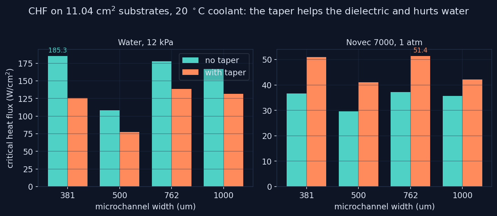
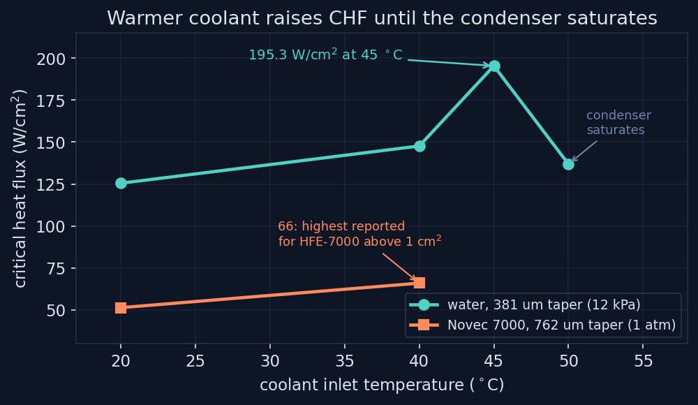

0.012 K/W
MINIMUM TOTAL RESISTANCE
The experimental core of the dissertation: de-ionized water at 12 kPa and 3M Novec 7000 at 1 atm, boiled on identical 11.04 cm² microchannel copper substrates inside a sealed 1U chamber with a submerged finned-tube condenser. Four channel widths, a dual-taper microgap manifold, four coolant temperatures, and a formal uncertainty analysis under every number. In press at the ASME Journal of Heat and Mass Transfer.
The chamber is a sealed 70 by 85 mm unit, under 50.8 mm tall with the lid bolted, that sits directly on the processor's heat spreader; its design is protected by U.S. Patent 12,349,313 B2, assigned to RIT. Inside, 28 finned condenser tubes provide 48,440 mm² of condensing area fed by facility coolant at 4.75 kg/min. The test substrates are copper 101, 55 by 55 by 1 mm with a 34.5 by 32 mm active boiling area, machined with parallel open microchannels at widths of 381, 500, 762, and 1000 μm, all 400 μm deep with 250 μm fins. The dual-taper microgap manifold sits above the substrate at a 7 degree angle with a 2 mm inlet gap: bubbles nucleating at the narrow inlet get squeezed by the converging geometry toward the wider outlet, pumping fresh subcooled liquid across the surface with no external actuation.
Heat flux comes from Fourier conduction across three calibrated thermocouples in the heater block, with a Taylor backward-difference gradient and a Kline–McClintock uncertainty propagation: heat flux to ±2.14 W/cm² and surface temperature to ±1.06 °C, with every experiment repeated and agreeing within 5%. Water runs at 12 kPa, where it saturates near 49 °C; Novec 7000 runs at 1 atm because its 12 kPa saturation temperature of roughly minus 12 °C is useless for electronics.
The taper was expected to help both fluids. It did not, and the asymmetry is the paper's most interesting result. For Novec 7000, the taper raised CHF on every channel width, 18 to 39%, peaking at 51.4 W/cm² on the 762 μm substrate, because Novec's low surface tension makes small bubbles the taper can squeeze. For water, whose surface tension is 5.5 times higher, departure diameters outgrow the 2 mm gap; bubbles coalesce inside the taper into vapor slugs that choke liquid return, and CHF falls from 185.3 to 125.5 W/cm² on the 381 μm substrate. Same geometry, opposite outcome, and the high-speed imaging shows both mechanisms directly.

Channel width has its own physics. The optimum shifted from 762 μm for Novec to 381 μm for water, tracking the Bond number: water's larger bubbles want the stronger capillary confinement of narrow channels, while Novec's small bubbles escape narrow channels freely. The 500 μm width underperformed for both fluids, sitting in the transitional regime where confinement is strong enough to trap vapor but too weak to drive capillary pumping.
In a sealed chamber, coolant temperature, pool subcooling, and internal pressure are one knob, not three. Raising the coolant from 20 to 45 °C cut pool subcooling, let bubbles survive to the condenser instead of collapsing in the pool, raised internal pressure and with it vapor density, and shifted the bubble population toward smaller, more frequent departures. Water CHF climbed 56%, from 125.5 to 195.3 W/cm². At 50 °C the condenser ran out of driving temperature difference, vapor blanketed the tubes, and CHF fell back to 136.8. The same pressure-driven mechanism took Novec 7000 from 51.4 to approximately 66 W/cm² at 40 °C coolant, the highest CHF reported for HFE-7000 on any surface above 1 cm².

At 195.3 W/cm² on 11.04 cm², the chamber dissipates roughly 2156 W from a single substrate, above the TDP of every current and announced GPU, including 1400 W Blackwell-class parts, while operating as a fully passive thermosiphon on the refrigerant side inside a 1U envelope. Surface temperatures at CHF stayed moderate, 49 °C for Novec at 20 °C coolant and 77.9 °C for water at 45 °C, both under the 85 to 105 °C junction limits of current processors. And because the working fluid is hermetically sealed and the facility side can reject heat through a dry cooler, the design eliminates cooling-tower evaporation, roughly 790,000 liters of water per year for a 50 kW rack.
The taper geometry used here was optimized for dielectric-scale bubbles; the water result makes clear a single taper cannot serve both fluids, and gap-height optimization for water is stated future work. Novec values above 51.4 W/cm² come from the 40 °C coolant condition, and all comparisons are at the stated coolant temperatures, not a universal rating.